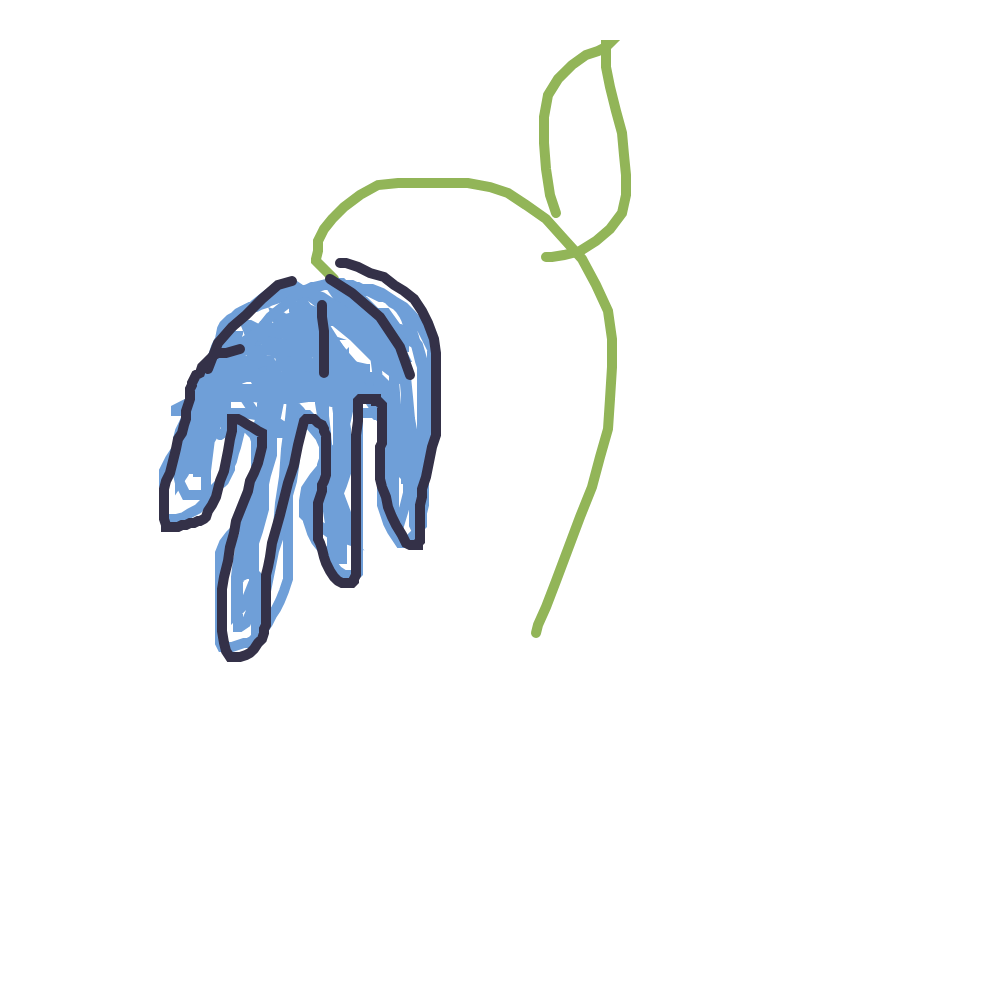
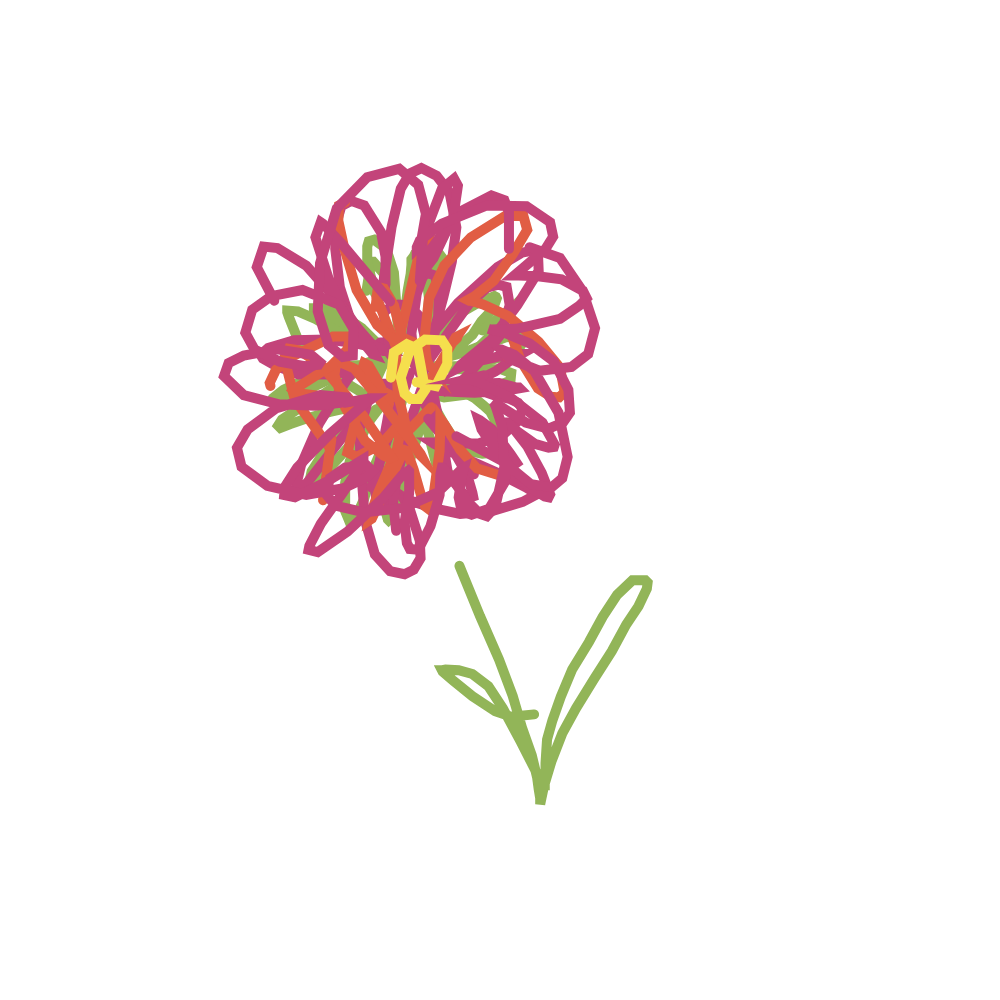

M+M Wedding
What's happening?
Friday September 19
Saturday September 20
- 1:00pm: Meet at M+M residence: 530 Telfer St. South
- 2:30pm: Bike, drive, Uber to Bruce Park
- 3:00pm: Picnic, ceremony, and yard games at Bruce Park
- 6:30pm: Return bikes to 530 Telfer, relax, walk to Barn Hammer Brewing
- 7:00pm: Pizza, cake, music and dancing at Barn Hammer
Sunday September 21
- 10am: Drop-in backyard brunch
What to wear?
We’re hoping for warm, sunny weather, but please come prepared for chilly evenings. If you’re biking to the park, wear something comfortable — the rental bikes are Dutch-style, so dresses are doable! Please feel free to bring a change of clothes for the park. A few vehicles will be heading there and can carry extra jackets, shoes, bags.
Where to park?
- At our house, there is free parking along Telfer Street from 5:30pm to 9:00am and 2-hour free parking during the day.
- At Bruce Park, park on Douglas Park Rd. near the park entrance pathway.
- At Barn Hammer Brewing, there is free evening parking on Wall St.